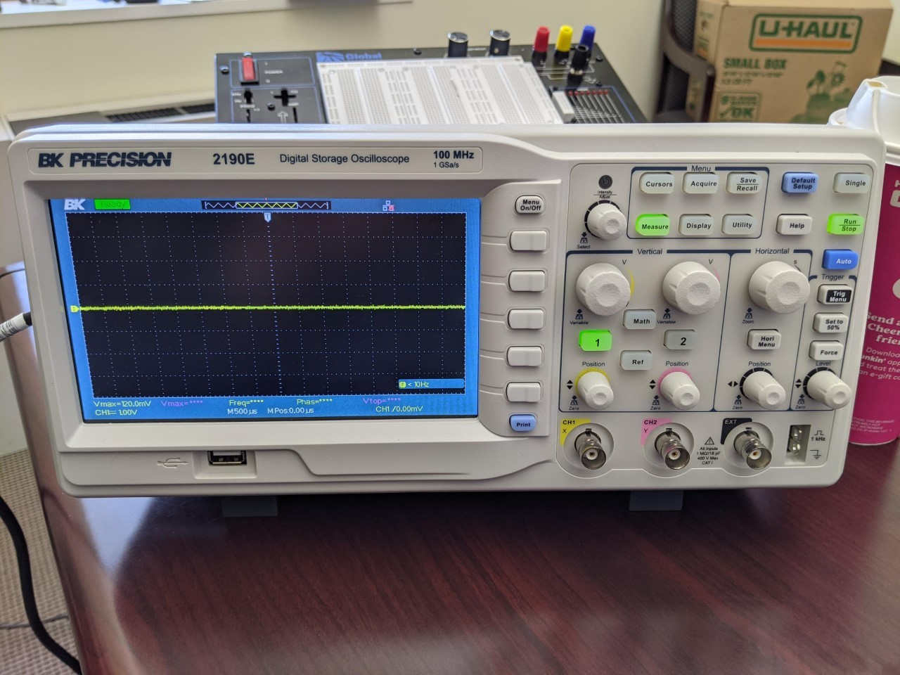
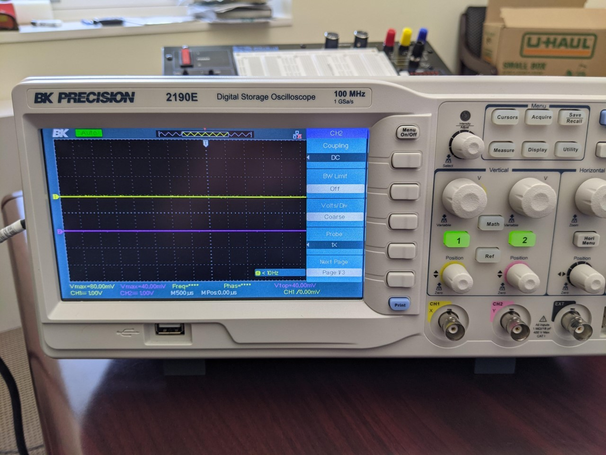
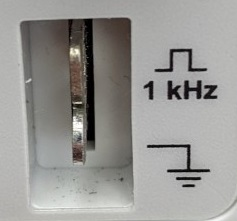
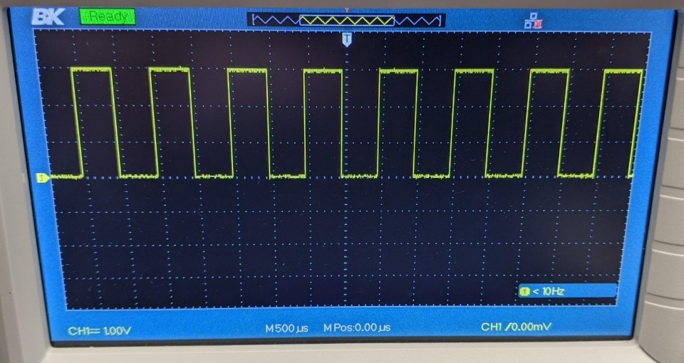
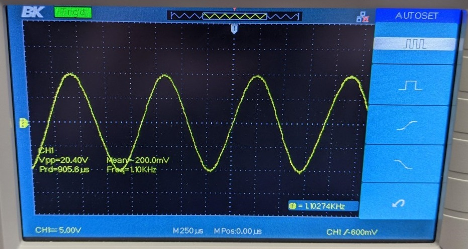
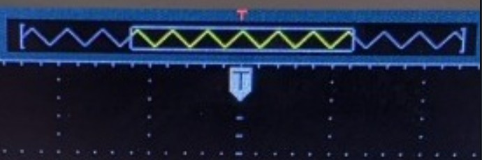

Section 14.2 Lab: Oscilloscope Primer
Objective: Through the course of this lab, you will familiarize yourself with the operation of a the BK Precision 2190E Digital Oscilloscope. You will use the scope to measure an AC voltage signal from the internal function generator of the scope, and from an external function generator. Our goal will be to understand how to display a signal on the scope, measure frequency and amplitude values, and trigger the scope properly by adjusting the triggering threshold and other trigger settings.
Equipment: Function generator, oscilloscope, BNC coaxial cables.
Lab Notebook: In your theory section of the report, you should discuss any functions of the oscilloscope that we use today and their purpose. In the data section, you should include the signal data and photos asked for throughout the lab. You do not need a procedure, results or conclusion section for this lab. Otherwise, please follow the lab notebook guidelines provided in Chapter 10.
THE OSCILLOSCOPE INTERFACE.
The oscilloscope interface seems quite complicated at first, but in order to measure one signal vs. time we will only need a few functions.
-
Turn on your scope using the power button on the top of the case. Wait for it to start and then hit the “Default Setup” button- it is blue in the upper right of the front face. You should see the following display:
-
The scope has the ability to display two signals at once. Turn on the channel two display by hitting the “2” button. A pink line, representing the voltage plugged into the channel 2 BNC input connector, should now appear on top of Channel 1’s yellow line. (Both voltages are zero at the moment as nothing is plugged into either channel.)
-
You can use the small knobs below the “1” and “2” buttons to displace the signal lines on the display. Try it and see if you can move channel 1 upwards and channel two downwards as shown below:
-
Turn off channel 2 by hitting the “2” button. Re-center signal 1 on the x-axis. Turn off the channel 2 menu that appeared on the right of the screen by hitting the “Menu On/Off” button.
To explore more of the functions of the scope we will need to look at a signal.
MEASURING THE BUILT-IN TEST SIGNAL.
The oscilloscope has a built in test signal. It is a 1KHz square wave, and can be measured by connecting an oscilloscope probe to the two metal clips in the lower right of the front face.

-
Find your oscilloscope probe. Plug it into the Channel 1 BNC connector on the oscilloscope. Set the attenuation switch on the probe to 1X. (10X means the voltage measured in attenuated by 10- useful for high voltage projects.)
-
The probe has two clips. The side alligator clip must be connected to ground. The center hook clip is connected to the point in a circuit where you want to measure the voltage. Find the metal leads for the test signal (shown above in the figure). Connect the probe clips to the leads. One lead should be clearly labeled as ground. Channel 1 should display the test signal as shown below:
-
Take a picture of your channel 1 display for your lab notebook.
-
You should see the oscilloscope’s vertical and horizontal scales on the display screen. The CH1 = 1.00V marker means that the vertical grid spacing (between horizontal dotted lines) represents a change of 1.00 V. The M = 500 μs marker means there is a 500 μs spacing between each vertical dotted line. What is the amplitude of this square wave? Include this value in your report.
-
Try to change the vertical and horizontal scale by using the large CH 1 knobs on the front panel. Change the horizontal scale to display the wave on a 100 μs timescale and a 2V vertical scale. Take a picture of the output to include in your report.
-
Return the waveform to its default view. You can do this either by reversing your changes made above or, even easier, by just hitting the Default Setup button again.
MEASURING A SINE WAVE.
Now we will use an external function generator to produce an AC sine wave signal for us to measure.
-
With the function generator turned off, use a BNC cable to connect the function generator output to the oscilloscope Channel 2 input.
-
Turn on the function generator. We want a 1V amplitude 1kHz sine wave signal to measure. Press the ‘Amp’ menu button and type in 1.0 and then press V. Then, click Freq and type 1.0 and click the kHz button. At this point, there is still no signal being produced. Press the Output button to start producing the desired signal. The Output button should now be glowing, indicating that the function generator output is active.
-
The display should show a sine wave, but probably too zoomed in to see the whole wave. Hit the Auto button to autoscale the display to the signal. The following image shows the correctly auto-scaled sine wave. Click the ‘Measure’ button on the oscilloscope and select parameters that you might want to measure for each channel, including the Peak-to-Peak Amplitude \((V_{pp})\) and frequency of the signal. What are the values of these parameters? Record values in your notebook along with an image of the oscilloscope display.
-
To make sure you understand the different settings of the function generator and scope, do the following:
-
Set the function generator to display a 500Hz signal with a 20V pk-pk amplitude
-
Display the signal on the scope with a 10V vertical scale and a 1ms timescale.
-
Take a picture of this output and include with your report.
-
-
Note that you can use the position knob to move the signal up and down on the screen. This is purely moving the 0V reference position on the screen. The position of this reference point is indicated by the yellow arrow with a ‘1’ in it.
-
Also note that you can adjust the vertical Zoom, or scaling for each channel independently. As you adjust the CH1 knob, you can see that the value ‘CH1=___V’ changes in the bottom left corner. This number indicates the change in voltage vertically across one of the small boxes in the grid displayed on screen for the Channel 1 signal. You can also adjust the horizontal scaling in the same way, with the ‘M___ms’ number providing the change in time horizontally across one of the small boxes in your grid. You will often need to adjust these appropriately to see your desired signal. Note: You should always try to maximize the vertical size of each signal that you are trying to measure to get the most precise measurements using the built-in ‘measure’ feature and using the cursors (explained below). If you have a periodic signal, it is often desirable to have 3-5 periods displayed in order to use the built-in ‘measure’ feature.
USING THE CURSORS.
With complicated signals, the auto measured output for amplitude and frequency cannot necessarily be trusted. In these cases, it’s better to do manual measurements with the oscilloscope’s cursor functionality.
-
Set up the function generator to produce a 1kHz, 20V pk-pk sine wave.
-
Display this signal on the scope, auto-scaled. Hit the Run/Stop button to freeze the signal for better analysis. The button should light up red when data acquisition is stopped. (Don’t forget it’s stopped and that you’re no longer measuring real time data!)
-
To manually measure the period of the wave, we will use vertical cursors. Hit the Cursors button on the top center of the scope control panel. In the menu that appears, change the mode to Manual. Then change the type to Time and ensure that the source is CH1. You should see two dotted lines appear on the display.
-
You can move the position of the lines by selecting cursor A or B in the screen menu and then turning the small knob in the upper left of the control panel. Try to move cursor A onto a peak of the wave. Do the same for cursor B.NOTE: If you can only see one cursor line on the screen, it might be that the other is off the edge of the display. Try selecting the invisible cursor and moving the knob until it appears in view. Sometimes you might need to zoom out in time or voltage to find the cursors.
-
The cursors appear with readouts that tell you the time location for each individual cursor (with respect to the trigger, which will be discussed next), the time interval between the two cursors, and the associated frequency. Do these values make sense? Record these values and take a photo of the screen for your report.
-
Switch the cursor type to Voltage to get horizontal cursors. Place them so that you can measure the pk-pk voltage amplitude. Record the pk-pk voltage, and take a photo for your report.
Triggering.
The oscilloscope needs to know where the wave starts in order to display a nice, steady display output. This process of finding the start of the waveform is called triggering. The trigger determines the location of your signal with respect to the scope’s definition of t=0s. The blue T in the image below indicates the time location of the trigger.

Using the trigger menu and cursor wheel, we can set the trigger level at whatever voltage threshold we want. When the experimental signal crosses the trigger level that we set, the oscilloscope calls that time t=0s and all other times are measured with respect to that time. The oscilloscope can be told to trigger off of CH1, CH2, or even other external signals. It can also be told to trigger when the signal rises through the trigger level or falls through the trigger level.
For a simple AC sine wave, triggering is pretty easy to set up with the Auto-scale feature, but for other signals you may need to manually adjust the trigger settings.
-
Make sure the scope is in RUN mode, not STOP mode.
-
With the AC sine signal displayed, find the Trig Menu button on the control panel (on the right, under Auto). Hit this button to bring up the trigger settings menu.
-
In this menu, we say how we want the scope to find the beginning of the signal. By default, Type is set to Edge, Source is set to CH1, and Slope is set to Up. This means we are telling the scope to search for an edge with a rising slope on channel 1, and place everything such that that edge is at t=0s.
-
Try to set the slope type to Down. Discuss in your report how the display changes.
-
We also need to tell the scope how big of a voltage actually counts as a signal. This is especially important if we have a noisy experiment. We don’t want to accidentally trigger on noise instead of our real signal. This function is controlled by the Trigger Level (or just Level) knob on the control panel (lower right).
-
Try adjusting the trigger level and you should see the level line appear on the display. Any voltage signal with a peak below this line will not be considered a signal. Try moving the level to above the sine wave peak. Describe what happens in your report.
-
Adjust the level knob to manually regain good triggering. As a rule of thumb, it is good to have the trigger level around 30% below the peak of your signal.
The location of the trigger’s t=0s can be adjusted left or right on the screen using the Horizontal Position knob. A word of advice: if the trigger time is offset from the middle of the screen and you change the time resolution on the scope, the trigger indicator may be outside of the window of view on the display. This can sometimes cause confusion if you do not realize that you are looking at a portion of the signal well after (or before) the trigger time.
In more advanced contexts one can trigger all oscilloscope channels off of Channel 1, Channel 2, or off of a third external trigger. We will discuss these options later on in the course, as needed.